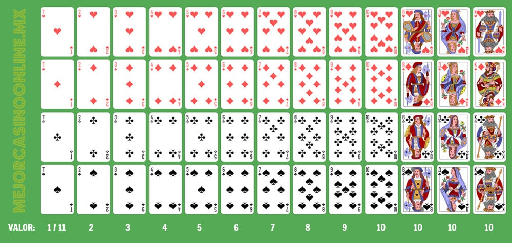

El juego será de un solo jugador contra el dealer. El objetivo del juego es alcanzar una puntuación mayor que la del dealer sin pasarse de 21. La puntuació se calcula con la suma de los puntos de las cartas en tu mano. Las cartas puntuan así (independientemente del palo)
Antes de empezar la ronda, el jugador hace una apuesta. Al empezar la ronda se reparten 2 cartas al jugador y 2 cartas al dealer. De las 2 cartas que se le dan al dealer al principio, el jugador solo ve una.
Hit: pedir otra carta. El jugador recibe otra carta de la baraja y se le suma a la puntuación. Si el jugador se pasa de 21 con esa nueva carta ya no puede hacer más acciones. Si no, puede hacer hit otra vez o plantarse. No hay límite de hits que puedes hacer.z
Stand: plantarse. El jugador ya no recibe más cartas y pasa al turno del dealer.
Split: partir. Si las 2 cartas iniciales que le tocan al jugador son del mismo valor (8/8, 4/4, K/K) se dará la opción de hacer split.
Al hacer split, cada una de las dos cartas se convierten en una mano independiente, casi como si jugasen 2 personas. En cada mano puedes hacer hit o stand de forma independiente como si se tratase de una mano normal. Cada mano puede perder o ganar individualmente de la otra, es decir, puedo ganar con una mano y perder con la otra. A la hora de la apuesta, hay que tener en cuenta que esta se dobla, ya que cada mano tiene una apuesta individual igual a la que se hace antes de empezar la ronda.
Double: doblar. Última acción disponible. Esta supone doblar tu apuesta y robar una carta más. Despues de hacer esto no se puede hacer hit ni split ni nada, automáticamente se pasa el turno. Solo se puede hacer si tengo suficiente dinero para doblar la apuesta.
Cuando tu turno acaba y pasa el turno del dealer, se revela la carta que tenía oculta y el dealer pasa a hacer hit o stand.
Una mano puede acabar de 6 formas diferentes:
- Te pasas de 21: si haciendo hit te has pasado de 21, da igual lo que saque el dealer, pierdes.
- El dealer saca 21 con 2 cartas (blackjack): el jugador pierde automaticamente. En este caso específico, no se le da turno al jugador. En cuanto se reparten las cartas, se revela que el dealer ha sacado blackjack y el jugador pierde.
- No te pasas, pero la puntuacón del dealer es mayor sin pasarse de 21: pierdes
- No te pasas y tienes más que el dealer: ganas la ronda.
- No te pasas y el dealer se pasa: ganas la ronda.
- Teneis la misma puntuación sin pasaros de 21 ninguno: empate, ni pierdes ni ganas. Te quedas con el mismo dinero con el que has empezado